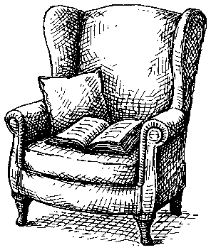
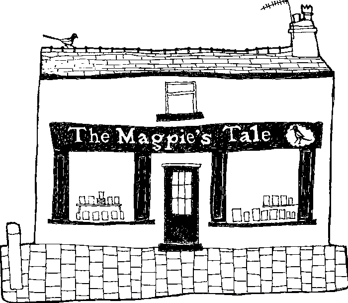

The Bee Sting
Paul Murray
A family coming apart over six hundred pages, and I resented every interruption. Take it somewhere you’ve nothing else on.
Paperback · 656pp£9.99
This is a design concept, not a working website. Nothing on it clicks, and the books, events, hours and address are stand-in content. It is here so the look can be agreed before anybody writes the real thing. The identity it uses is set out in the brand guidelines.
This is the desktop layout. Scroll it sideways to see the full width, or see the phone version below.
1234567Every book in the shop was chosen by one of the two of us.
Open today until 4pm. Wednesday to Sunday, 10 to 4.
About the shopPaul Murray
A family coming apart over six hundred pages, and I resented every interruption. Take it somewhere you’ve nothing else on.
Paperback · 656pp£9.99
Samantha Harvey
Six astronauts, sixteen sunrises, almost no plot. Finished it in an afternoon and started it again the week after.
Paperback · 144pp£9.99
David Grann
A shipwreck, a mutiny, and two crews who came home telling completely different stories. Better than it has any right to be.
Paperback · 352pp£10.99
Almost anything in print can be here by the end of the week, and it costs the same as it would anywhere else.
Tell us what you’re after. Ring, email, or come in and ask.
We order it that day. Most things arrive within three or four.
It waits behind the counter with your name on it until you can get in.
Fri 4 Sep7pm
Twenty chairs, one author, and wine that’s better than it needs to be. Free, but tell us you’re coming.
Sun 13 Sep10.30am
Half an hour of picture books on the rug at the back. No need to book, just turn up.
Wed 30 Sep7.30pm
Claire Keegan
Short enough to read in an evening and difficult to stop thinking about afterwards. Copies are behind the counter at a couple of pounds off if you’re coming. Nobody minds if you haven’t finished it.

There are two of us. Between us we read a good deal of what we stock, and when we haven’t read something we’ll tell you so rather than guess.
If you tell us what you liked last, we’ll usually have something for you. If we haven’t read it, we’ll say so.
Two minutes from the Botanic Gardens, on the same side as the church. There is free parking on the road outside and a larger car park behind the gardens. The shop is on the ground floor with a step at the door.
The shopfront illustration is the hero rather than a stock photograph of books. It is the one image no other bookshop can use, and at 23 KB it costs less than a single photo would.
The most common reason anyone visits a local shop website. It sits above everything else and is the only moving part on the page.
The only colour on the page, and it sits on the one thing worth pressing. Everything else is black on white, which is what makes a single gradient carry any weight at all.
Each book is set like the hand-written card on the shelf: label, title in italic, and a note from somebody who finished it. This is the piece the shop updates most, so it is the easiest thing to edit.
Ordering anything in print is what a small shop can offer that a warehouse cannot. It was a sentence at the bottom of the page and is now a section, because it is the reason to choose the shop over a next-day delivery.
One recurring slot, and one short record for the shop to fill in each month: date, book, a line about it. Cheap to keep current, and it gives people a fixed thing to turn up to.
The picks only work if somebody believes a person chose them. Naming what the two of them are reading this week costs nothing to maintain and does more for that than any amount of copy about a passion for books.
Every book in the shop was chosen by one of the two of us.
Open today until 4pm.
About the shop
Paul Murray
A family coming apart over six hundred pages, and I resented every interruption. Take it somewhere you’ve nothing else on.
Paperback · 656pp£9.99
Samantha Harvey
Six astronauts, sixteen sunrises, almost no plot. Finished it in an afternoon and started it again the week after.
Paperback · 144pp£9.99
Fri 4 Sep 7pm
Twenty chairs, one author, and wine that’s better than it needs to be. Free, but tell us you’re coming.
Almost anything in print can be here by the end of the week, and it costs the same as it would anywhere else.
Tell us what you’re after.
We order it that day.
It waits behind the counter with your name on it.
Wed 30 Sep7.30pm
Claire Keegan
Short enough to read in an evening. Nobody minds if you haven’t finished it.
There are two of us. Between us we read a good deal of what we stock, and when we haven’t read something we’ll tell you so rather than guess.
Nothing is hidden on a phone and nothing extra is loaded for it. The picks stack, the navigation folds, and the drawing swaps to a smaller file at 9 KB. Most people looking up a shop are standing outside it on a phone, so this is the layout that matters most.
Opening a web page means downloading it onto a phone or a laptop, and downloading uses electricity. The more there is to download, the more it uses. Website Carbon grades pages from A+ at the top down to F, based on exactly that.
Here is everything a visitor would download, measured from the real files in this concept rather than estimated.
Website CarbonA+
That comes out at 0.016 grams of CO2 per visit. Grams of CO2 are hard to picture, so the useful part is the band rather than the number: A+ runs up to 0.04 grams, and this page sits at less than half of that.
In practical terms, the page could grow to roughly two and a half times its current size before the rating would change. That is the headroom that matters. It means the shop can add photographs of the shelves later, or a few more sections, without losing the grade.
For comparison, an average web page is about 2.5 MB, close to twenty times heavier than this one. Nothing clever is going on. The site simply has no tracking scripts, so it needs no cookie banner, and it uses the shop’s own drawings rather than stock photography and one typeface rather than four.
The three things that change often are the picks, the events and the opening hours. Each one is a short form with a handful of boxes, and nothing else on the page can be broken from inside it. There is no page builder, no blocks to drag, and no way to change a font.
Add a book to the front table
It appears on the homepage as soon as you save.
Two or three sentences. Say what it does, not how good it is.
Underneath, the editor writes to the same store the site is built from, and the build that is already set up for this hosting runs on its own and publishes the change. The shop waits about a minute and never sees any of that. It also means the site stays a set of plain files, which is most of the reason the rating holds.
Settled: the layout, the type, the way books and events are presented, the fact that colour appears exactly once, and that spot illustrations stay small enough not to compete with the shopfront drawing.
Not settled: every word of content on the comp. The books are real, the notes about them are written as examples of the right tone, and the address, phone number and hours are stand-in. The shop supplies all of that before build.
The homepage sets the pattern and the rest reuses it, so the whole site stays inside the same budget.
This concept deliberately stops at telling people what is in the shop and getting them through the door. Selling and posting books is a bigger step, and it is worth saying plainly that the website is the easy half of it.
What the shop would need first, none of which is a web problem: somewhere to know what is actually in stock hour by hour, packaging and postage, someone picking and packing every day it is open, and a way of handling returns. Book margins are thin and postage eats into them, so a lot of small shops find the numbers only work above a certain volume.
Two smaller steps worth considering first. Click and collect sells online but skips shipping entirely: people pay on the site and pick the book up at the counter, which is the ordering section on this page with a card payment attached. Alternatively Bookshop.org lets independent shops have an online storefront while they handle the fulfilment, which means no packing and no post office.
One thing to know before deciding: a real shop adds product photographs, a basket and payment scripts, and that would very likely move the site out of the A+ band. That is a fair trade if the shop is selling, but it should be a choice rather than a surprise.